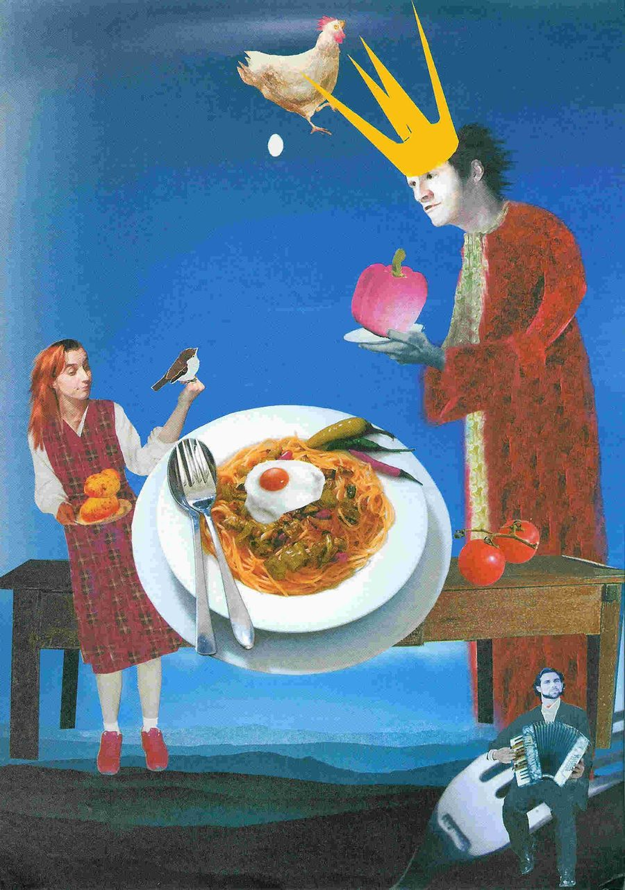
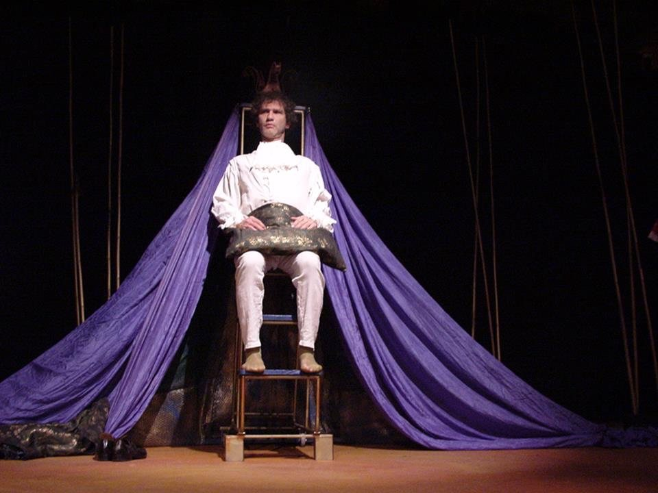
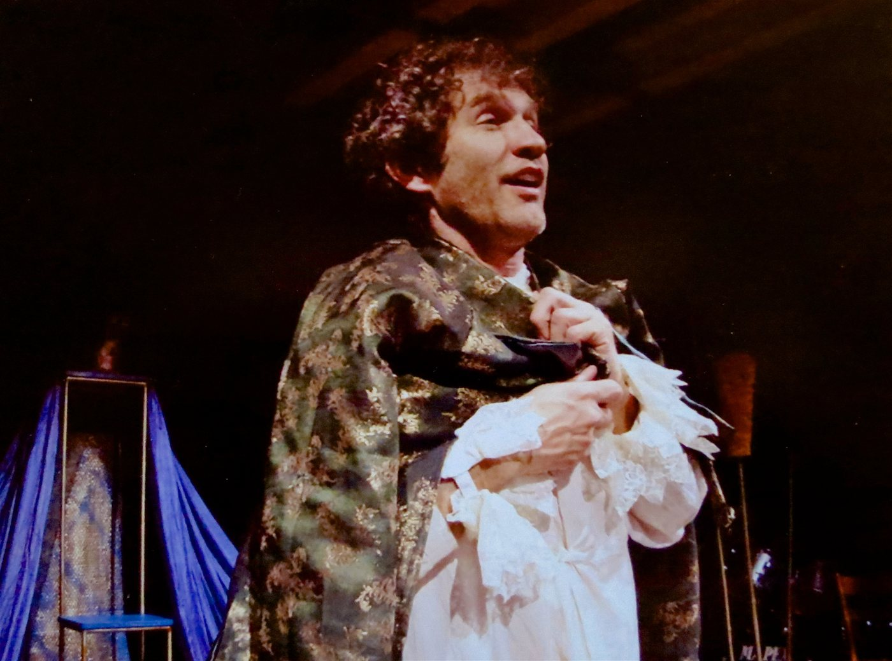
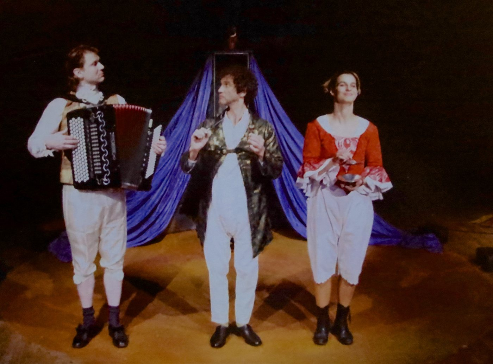
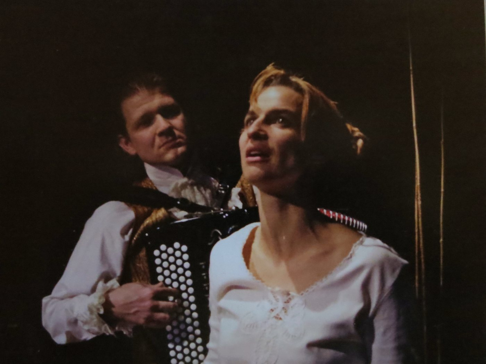
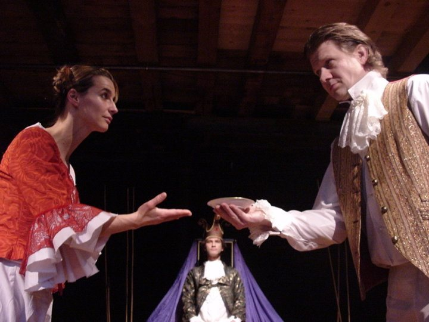
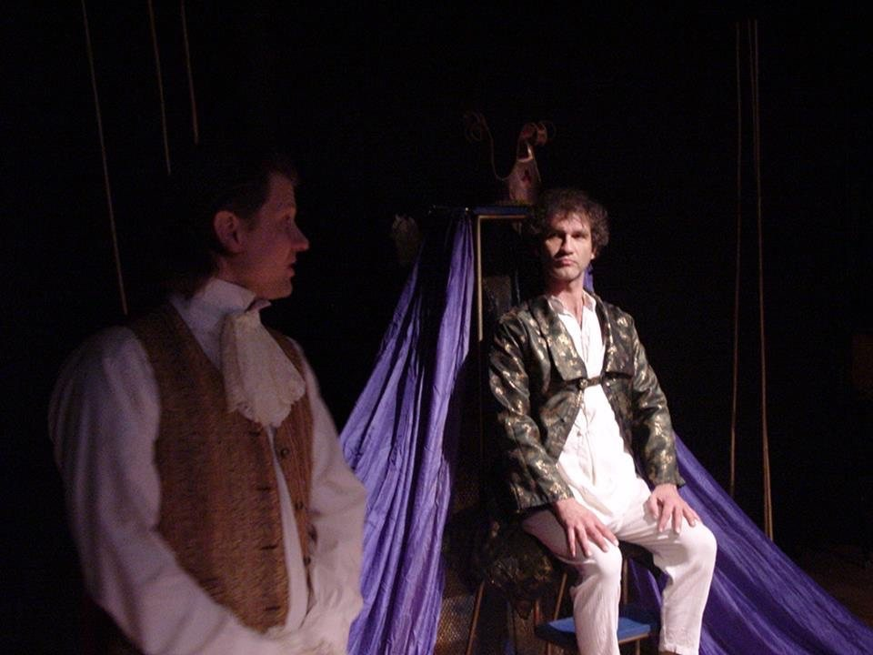
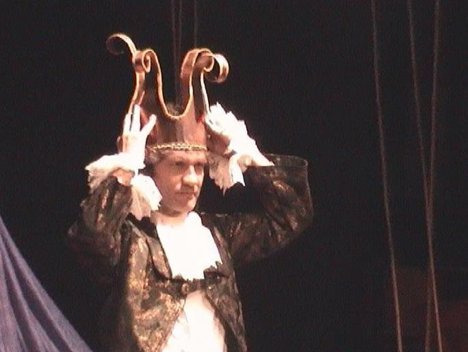

König Karl dem Vierten laufen eines Tages alle Untertanen davon, weil sie seine ständigen Gängeleien nicht mehr aushalten. Jetzt ist er auf sich selbst gestellt: Niemand hilft ihm beim Anziehen, niemand wäscht, putzt und kocht für ihn. Der Winter wird hart, es ist kalt, und im grossen Schloss versteckt der einsame König seine Herzensängste unter einem Berg von Kissen und Decken.
So trifft Lea auf ihn, ein Mädchen, das zufällig im Schloss vorbeikommt und dem frierenden König eine heisse Suppe kocht. Karl ist glücklich, dass sich wieder jemand um ihn kümmert – und möchte Lea gleich bei sich anstellen. «Was dir fehlt, sind nicht Untertanen, sondern Freunde», meint Lea. Bis König Karl tatsächlich Freunde findet, seine Freude am Kochen entdeckt und sein Schloss in eine gastliche Herberge verwandelt, vergeht noch viel Zeit – und manche Prüfung ist zu bestehen.
«Das Stück streicht die existenziellen Nöte der Menschen heraus, ungeachtet ihres Standes in der Gesellschaft. Mit einem minimalen Einsatz an Requisiten, mit der Sprache, einem Schuss Humor und mit viel Mimik verstehen es die Schauspielerin Franziska Senn und deren Kollegen Reto Baumgartner und Ueli Blum, ein modernes Märchen in die Gegenwart umzusetzen.» Otto Graf, Volksstimme Sissach, 16.11.2004
- Spiel
- Franziska Senn, Reto Baumgartner, Ueli Blum
- Stück
- Ueli Blum / Ensemble
- Regie
- Ueli Blum
- Dramaturgie
- Rüdiger Stephan
- Musik / Komposition
- Erich Radke
- Ausstattung
- Marie-Eve Mérillou
- Produktionsleitung
- Sabine Küch, Franziska Senn
- Grafik
- Urs Amiet






